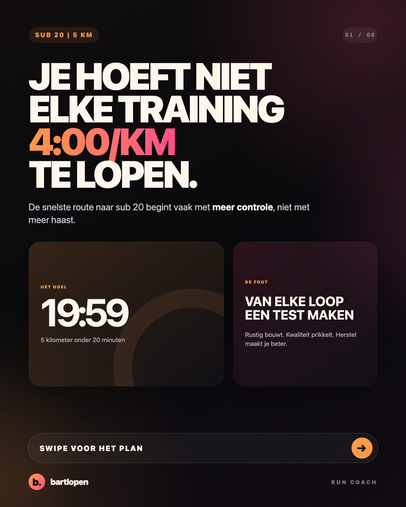
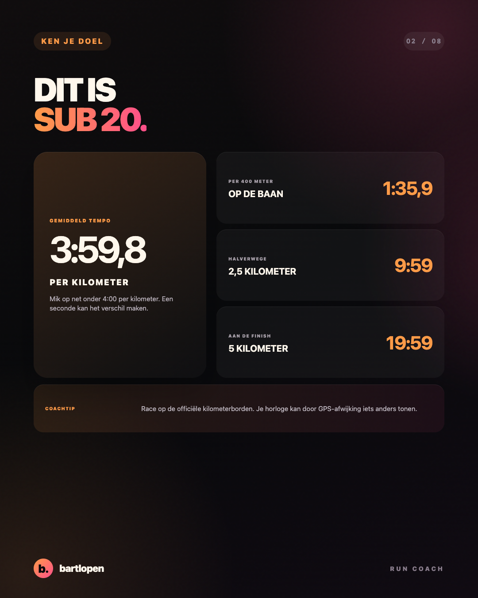
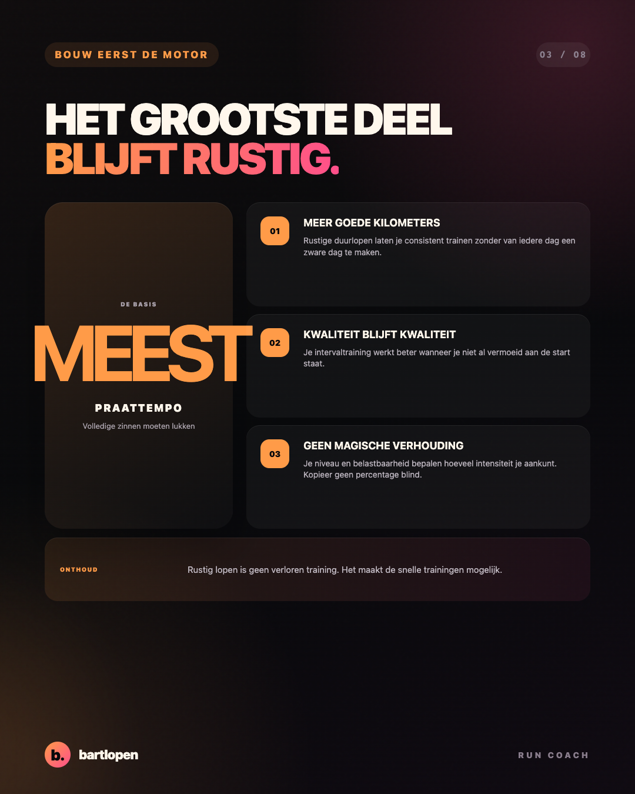
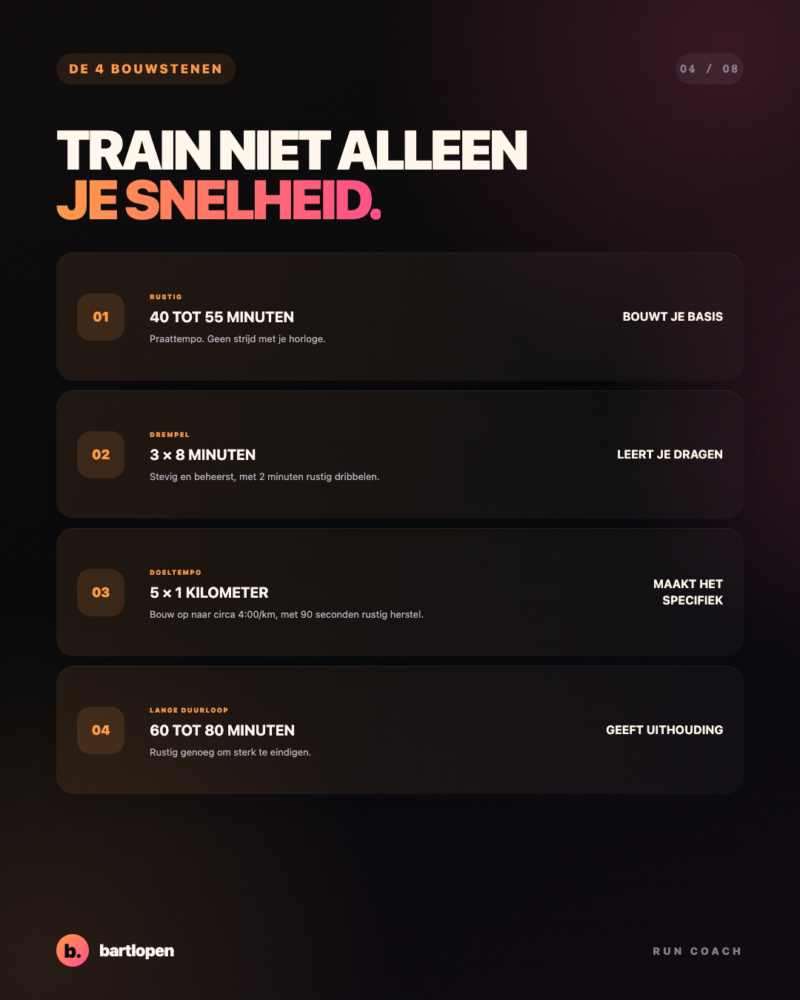
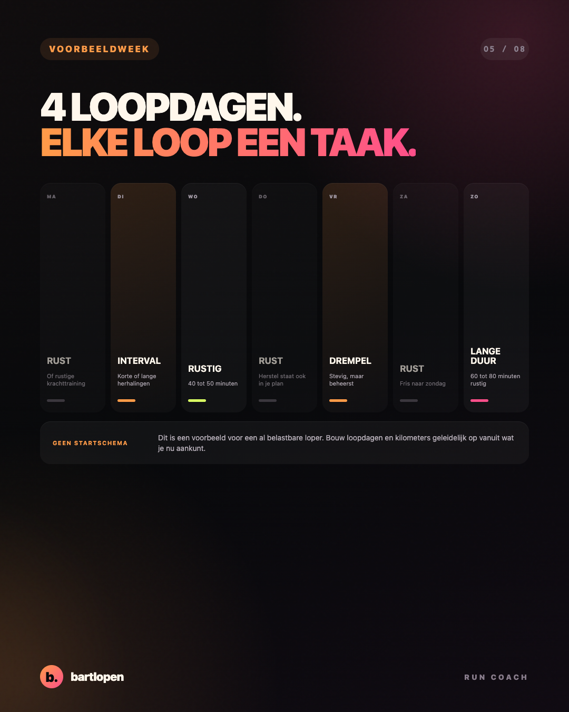
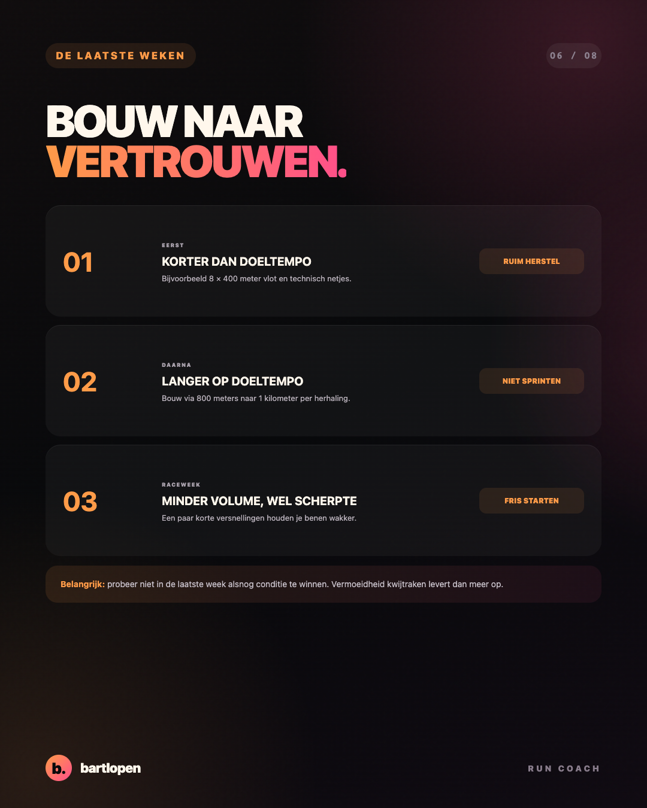
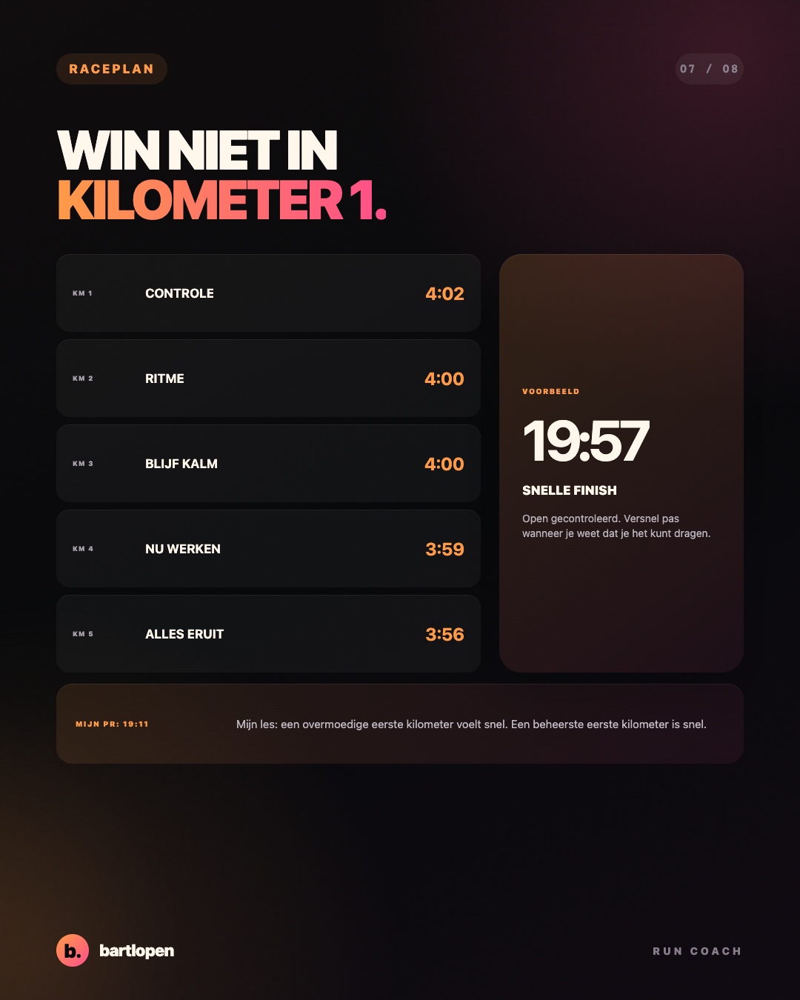
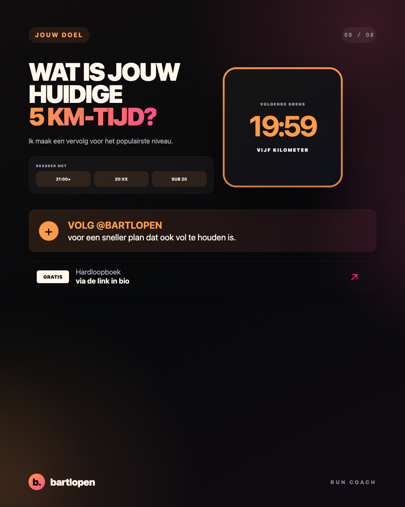

SLIDE 01 ↗Onder 20 minuten
op de 5 km
Acht praktische slides over rustig trainen, doeltempo, een voorbeeldweek en een beheerst raceplan.

SLIDE 02 ↗
SLIDE 03 ↗
SLIDE 04 ↗
SLIDE 05 ↗
SLIDE 06 ↗
SLIDE 07 ↗
SLIDE 08 ↗Caption
SUB 20 OP DE 5 KM? STOP MET ELKE LOOP HARD MAKEN. 👀 4:00 per kilometer is je racetempo. Het hoeft niet het tempo van je hele trainingsweek te zijn. Een sterk plan combineert: ✅ veel rustige kilometers op praattempo 🔥 drempelwerk dat stevig, maar beheerst voelt ⚡ doeltempo in kleine, gerichte porties 🧱 een rustige lange duurloop Een mooie sessie om naartoe te bouwen is 5 × 1 kilometer rond 4:00/km met 90 seconden rustig herstel. Dat is geen instaptest. Bouw eerst via kortere herhalingen op en stop wanneer je vorm instort. Mijn persoonlijke record op de 5 km is 19:11. Mijn belangrijkste les? De eerste kilometer moet gecontroleerd voelen, niet overmoedig. Bewaar deze serie voor je volgende trainingsblok. Wat is jouw huidige 5 km-tijd? 👇 #hardlopen #5km #sub20 #hardloopschema #intervaltraining #runningtips #bartlopen
Onderbouwing: onderzoek naar trainingsintensiteit en 5 km-prestaties, een meta-analyse naar trainingsintensiteitsverdeling en een meta-analyse naar taperen. De trainingen zijn coachvoorbeelden en geen individueel schema.